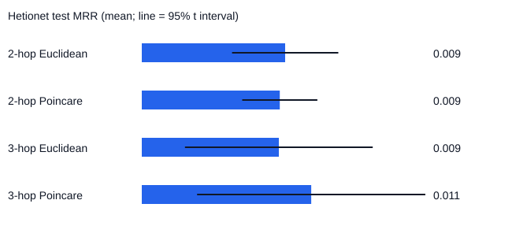

RMF-RAG Hetionet Benchmark
Dataset: Hetionet v1.0. Seeds: [7, 17, 29, 43, 101].
Selected edges: Gene-Disease 3200, Disease-Compound 1145, Gene-Compound 823.
| Split | Method | Recall@1 | Recall@5 | Recall@10 | MRR | Top-1 path verified |
|---|---|---|---|---|---|---|
| 2hop_test | Euclidean | 0.001 [-0.001, 0.003] | 0.007 [0.002, 0.012] | 0.011 [0.005, 0.017] | 0.009 [0.006, 0.013] | 0.032 [0.009, 0.056] |
| 2hop_test | Lexical | 0.000 [0.000, 0.000] | 0.000 [0.000, 0.000] | 0.001 [-0.001, 0.003] | 0.004 [0.003, 0.004] | 0.984 [0.980, 0.988] |
| 2hop_test | RMF-RAG hyperbolic | 0.002 [-0.000, 0.004] | 0.004 [0.000, 0.007] | 0.010 [-0.001, 0.021] | 0.009 [0.007, 0.011] | 0.050 [0.020, 0.079] |
| 2hop_test | No geodesic ranking | 0.002 [-0.000, 0.004] | 0.004 [0.000, 0.007] | 0.010 [-0.001, 0.021] | 0.009 [0.007, 0.011] | 0.050 [0.020, 0.079] |
| 2hop_test | No hop weighting | 0.001 [-0.000, 0.003] | 0.004 [-0.000, 0.009] | 0.012 [0.005, 0.018] | 0.009 [0.007, 0.011] | 0.046 [0.023, 0.070] |
| 2hop_test | No origin-tangent composition | 0.002 [-0.000, 0.004] | 0.004 [0.000, 0.007] | 0.010 [-0.001, 0.021] | 0.009 [0.007, 0.011] | 0.050 [0.020, 0.079] |
| 2hop_test | Path verification rerank | 0.000 [0.000, 0.000] | 0.000 [0.000, 0.000] | 0.001 [-0.001, 0.003] | 0.005 [0.004, 0.006] | 1.000 [1.000, 1.000] |
| 3hop_test | Euclidean | 0.001 [-0.001, 0.002] | 0.006 [-0.005, 0.016] | 0.019 [-0.009, 0.047] | 0.009 [0.003, 0.015] | 0.022 [0.010, 0.035] |
| 3hop_test | Lexical | 0.002 [-0.004, 0.009] | 0.007 [-0.011, 0.024] | 0.008 [-0.012, 0.029] | 0.010 [-0.001, 0.021] | 0.603 [0.466, 0.740] |
| 3hop_test | RMF-RAG hyperbolic | 0.000 [0.000, 0.000] | 0.008 [-0.002, 0.017] | 0.023 [-0.005, 0.050] | 0.011 [0.004, 0.018] | 0.028 [-0.026, 0.083] |
| 3hop_test | No geodesic ranking | 0.000 [0.000, 0.000] | 0.008 [-0.002, 0.017] | 0.023 [-0.005, 0.050] | 0.011 [0.004, 0.018] | 0.028 [-0.026, 0.083] |
| 3hop_test | No hop weighting | 0.000 [0.000, 0.000] | 0.007 [-0.000, 0.014] | 0.019 [0.005, 0.033] | 0.011 [0.005, 0.017] | 0.034 [-0.013, 0.080] |
| 3hop_test | No origin-tangent composition | 0.000 [0.000, 0.000] | 0.007 [-0.003, 0.017] | 0.023 [-0.005, 0.050] | 0.011 [0.004, 0.018] | 0.028 [-0.026, 0.083] |
| 3hop_test | Path verification rerank | 0.040 [-0.001, 0.080] | 0.110 [0.031, 0.190] | 0.190 [0.069, 0.311] | 0.089 [0.029, 0.149] | 0.968 [0.922, 1.013] |

Measured interpretation. 2hop: Poincare mean MRR is lower than Euclidean (0.009 vs 0.009). 3hop: Poincare mean MRR is higher than Euclidean (0.011 vs 0.009). Confidence intervals should be inspected before describing any difference as conclusive.
Scope boundary. This evaluates graph retrieval. A verified graph path or literature record is not a clinical treatment recommendation.
Snapshot SHA-256: a342ab57e9073e6c02bb5e109d1f16917e6f933be4e5c77ebbaebfa26b984c19
Himmelstein DS et al. Systematic integration of biomedical knowledge prioritizes drugs for repurposing. eLife 2017;6:e26726. https://doi.org/10.7554/eLife.26726